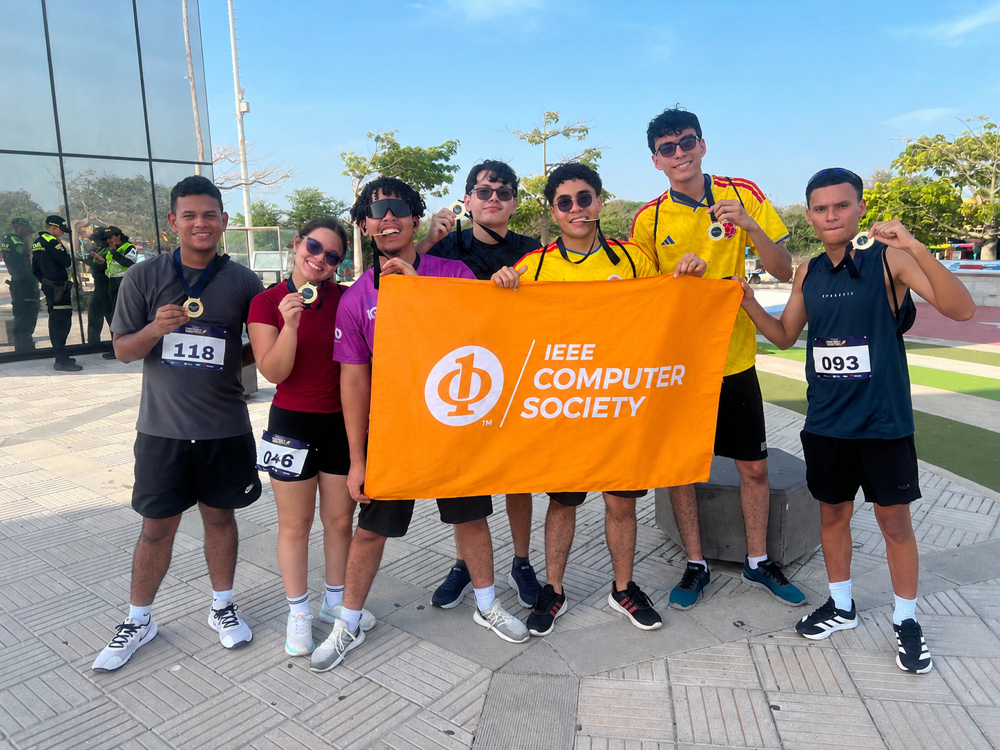

Colegio Santa Cruz de Mompox
Mompox, Bolívar
Bachiller Académico | Noviembre 2023

Barranquilla, Colombia | linkedin.com/in/arrietav-sebastian | +57 314 305 0786 | sebastianarrietav7@gmail.com

Estudiante de Ingeniería de Sistemas con enfoque en desarrollo backend, computación en la nube y ciberseguridad. Poseo conocimientos en Java, Python, Go, SQL y herramientas de análisis de datos. Tengo experiencia colaborando en proyectos académicos y en el desarrollo de backend y documentación técnica de sistemas.
Actualmente me encuentro fortaleciendo mis conocimientos en Linux, redes, Docker y fundamentos de ciberseguridad, con interés en la protección de sistemas, infraestructura y tecnologías cloud. Me caracterizo por mi capacidad de aprendizaje continuo, pensamiento analítico y trabajo en equipo.
Mompox, Bolívar
Bachiller Académico | Noviembre 2023
Barranquilla, Atlántico
Ingeniería de Sistemas | 2024 - Febrero 2028
GPA: 4.68
Organización: IEEE Universidad Libre
Cargo: Vicepresidente de la Rama Estudiantil
Barranquilla, Atlántico
Estudiante | 2024 - Presente
Ganador junto con mi equipo en la Feria de Proyectos de Aula durante el período 2025-1. El proyecto consistió en un sistema de monitoreo de calidad del aire en tiempo real.
Contribuí principalmente en el desarrollo del backend utilizando PHP y C++, además de participar en la elaboración y organización de gran parte de la documentación técnica del proyecto.
Barranquilla, Atlántico
Participo en un semillero de investigación en el cual se me asignó el estudio de una problemática relacionada con la forma en que las PYMES del Caribe colombiano gestionan simultáneamente la contabilidad bajo las NIIF y las normas del sistema tributario colombiano.
Realicé investigaciones en artículos académicos y espacios de investigación para identificar los principales requerimientos y funcionalidades que deberá incorporar un software orientado a resolver esta problemática.
Barranquilla, Atlántico
Voluntario | Mayo 2026
Participé como voluntario en la tercera edición del Hackathon Barranqui-IA, colaborando en actividades de logística, orientación y acompañamiento de los participantes durante el evento.
Barranquilla, Atlántico
Vicepresidente de la Rama Estudiantil
Apoyo en la gestión de miembros y en la organización de charlas, talleres y actividades desarrolladas por los diferentes capítulos y grupos de la rama estudiantil.
Idiomas: Español nativo | Inglés B1
Me interesa el trabajo colaborativo y la conformación de equipos multidisciplinarios en los que cada integrante pueda aportar desde sus principales fortalezas para alcanzar los objetivos del proyecto.
También tengo un fuerte interés por el aprendizaje continuo y por recibir retroalimentación, correcciones y sugerencias de mis compañeros, ya que considero que esto contribuye tanto a mi desarrollo personal como profesional.
Formación en herramientas de análisis de datos como Power BI, Python y Excel, orientadas al análisis de información y la toma de decisiones.
Formación en desarrollo web utilizando HTML, CSS y JavaScript, incluyendo herramientas y frameworks como Tailwind CSS y Bootstrap.
Formación en conceptos fundamentales de ciberseguridad, amenazas, vulnerabilidades, principios de seguridad informática y fundamentos necesarios para iniciar en el área.
Formación en conceptos fundamentales de redes, protocolos de comunicación y direccionamiento, así como en los principios utilizados para conectar dispositivos a través de Internet.
Obtuve la matrícula de honor en dos ocasiones: 2025-1 y 2026-1. Este reconocimiento me permitió obtener la exoneración del pago de la matrícula correspondiente a dichos períodos.
Participé en el Encuentro Departamental de Semilleros de Investigación de REDCOLSI, donde realicé la sustentación de una investigación relacionada con la gestión de registros contables bajo las NIIF y las normas del sistema tributario colombiano.